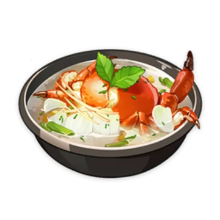

Calla Lilly Seafood Soup
by Tartaglia

Description
Looks delicous but hideous beneath. From friends to foes but still warm just like the soup.
Ingridients
4 Crab
1 Calla Lily
2 Mint
Steps
Boil the crab with mint
Add the Calla Lily on the center of a serving
I think that's it. Voilla!